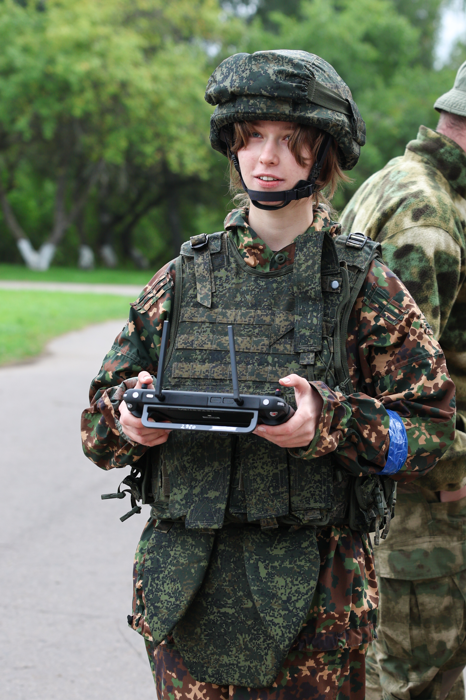

Зовут меня Дулевич Егор (позывной – Кастрюля). В этом репортаже я попытаюсь детально поведать о том, как для меня прошли армейские будни на тактико-специальных учениях «Военкор-2026».
Спойлер: было очень тяжело! Но обо всем по порядку…

«Сапер»Кристина Фанченко — фотокорреспондент холдинга «СБ. Беларусь сегодня», позывной «Сапер». С ней дважды посчастливилось оказаться в одном отряде. Об этом позже.
А вот о чем скажу сразу: размах и скрупулезная подготовка ощущались на каждом этапе учения – организаторы постарались воссоздать реально захватывающую атмосферу. Темп событиям задали с первых же минут: от места сбора до одного из соединений сил специальных операций нас доставили на вертолетах, а после посадки перебросили на бронетранспортеры. Мы получили комплекты формы и брони. Последняя, кстати, весит около 20 килограммов.
Все? Куда там! Нас сразу разделили на отряды, во главе каждого из которых стоял свой инструктор.


Нам с фотокорреспондентом посчастливилось вместе попасть в синюю команду, а нашим инструктором стал военнослужащий с позывным «Авлас» – с момента знакомства наша судьба и личная безопасность во многом зависели от него.
Первые часы на полигоне — погружение в атмосферу
Вторые сутки выделили для отработки упражнений и усвоения знаний. Первым делом нас ждали ранний подъем и зарядка по-военному: кросс на полтора километра, растяжка, отжимания и подтягивания.
После скорого завтрака нас ждало обучение: отряды разделили между собой и отправили изучать азы военного дела: от тактической стрельбы из пистолета и оперативной погрузки в БТР до управления дроном и погружения с аквалангом.

 Дроны
Дроны
 Вода
Вода
Около участка, обустроенного для демонстрации инженерного оборудования, из-за ближайшего здания внезапно выскочил «раненый»: военнослужащий с окровавленной рукой начал громко кричать и кататься по земле. Все застыли, ведь команды оказывать помощь, как это случалось ранее, никто не подал. Думать времени не оставалось — успел, будто в последний раз, оглядеться на «сослуживцев» и ринулся к пациенту.
Накладывать жгут было тяжело, ведь солдат то и дело брыкался и отмахивался, но в том и был урок: в реальных боевых условиях раненые не будут лежать смирно. Кое-как успел остановить кровотечение, когда к нашей паре из непутевого пациента и такого же врача подбежал настоящий полевой доктор. Вся эта сцена была креативным способом пригласить нашу группу на занятия по медицинской подготовке.
На следующей локации нашей команде довелось лицезреть становление «Сапера»: хрупкая девушка в огромном, невероятно тяжелом защитном костюме на отгороженной площадке боязливо прощупывает землю крюком-кошкой. Она успевает найти пиротехнический заряд (учебный – в костюме он безопасен) при помощи миноискателя, но не понимает, как использовать крюк. Новоиспеченный сапер совершает ошибку. Итог закономерен: стараниями пиротехников взрыв случился перед Кристиной, а не прямо под ней – отделалась легким испугом и на весь период обучения обзавелась запоминающимся позывным.


События третьего дня начались отнюдь не утром — приблизительно через час после полуночи на лагерь «напали». Пока все журналисты проснулись, вокруг палатки уже грохотали взрывы и выстрелы, а внутрь начали пробираться вооруженные люди. Времени не было, инструкций тоже. Полагаться оставалось только на инстинкты, а они говорили одно: беги, чтобы выжить…
Новоиспеченные военкоры вразнобой выбегали из своих палаток и направлялись в сторону лесополосы. Самые организованные как смогли постарались это сделать вместе с товарищами. Тем временем снаружи нас ждали военнослужащие с автоматами и непроглядные облака дыма. К нашей удаче, второе скрывало от первого. В итоге спастись удалось всем, а вот остаться равнодушным не смог никто.
Симуляция нападения — момент, когда инстинкты берут верх
На утро отряды ждала огневая подготовка. «Пострелять» удалось так, что впечатлений хватит на всю жизнь: пулеметы и зенитная турель, снайперская винтовка и учебная ручная граната – все на месте и с соблюдением строжайшей техники безопасности. Про классику в лице автомата Калашникова можно и не говорить, а вот изюминкой боевого учения стали захват траншеи и стрельба по дронам.
По завершении подготовки погружаемся в бронетранспортеры и едем к лагерю. Я, в наивной попытке исполнить долг капитана команды, уселся таким образом, чтобы наблюдать за дорогой через окна водителя. И вскоре замечаю, как наша машина сворачивает перед лагерем и уезжает в лес. Собираю волю в кулак и даю команду: «Всем приготовиться! Высаживаемся, как учили, и занимаем круговую оборону!». Самому пришлось выходить последним – и каково же было мое удивление, когда я увидел, что всех моих подопечных уже уложили на землю. Через мгновение прогремел взрыв – бронетранспортер «подбили» прямо за нашими спинами.

Полоса препятствий длиной около 200 метров, призванная сымитировать выживание военного корреспондента в условиях прямого столкновения, встретила нас, если так можно выразиться, со всем радушием. Впереди трава, бетонные заграждения, тоннели и колодцы, преодолевать которые нужно в бронежилете и каске — и все это ползком. Под силу такой вызов оказался не всем.
Накопившееся за день напряжение помог сбросить вечерний поход в лес. Группы развели костры и на открытом огне приготовили макароны по-флотски с горячим чаем. Здесь же свой позывной получил уже я: по пути в чащу кастрюлю с припасами несли военкоры Ковбой и Снаряд – одни из самых крепких в группе, а вот по дороге назад ее, пустую и грязную, я взялся нести самостоятельно, чтобы дать всем уставшим боевым товарищам немного отдыха. Безусловно, хотелось бы остаться в памяти братьев по оружию благодаря какому-нибудь подвигу, но поднятый моральный дух отряда – уже неплохо для начинающего капитана.


Про спокойные ночи помните? Забудьте. Около двух часов после полуночи, пока уставшие журналисты крепко спали, на лагерь напали снова — и в этот раз захватчики оказались быстрее. У военкоров не было ни единого шанса среагировать: спрятаться и тем более занять оборону не удалось никому. Вскоре все мы оказались в руках противника.
О дальнейших событиях скажу коротко: каждому участнику довелось столкнуться со своими страхами лицом к лицу, и других вариантов, кроме как справиться с ними, попросту не было. В конечном итоге, благодаря спасателям, выбраться удалось всем.
Утренним заданием стал репортаж с места событий, причем в новых командах. В этот раз снова повезло: в мою команду по подготовке видеорепортажа попало два тележурналиста, а с ними и фотокорреспондент-сапер Кристина Фанченко, которую я, не скрою, увидеть был особенно рад. Впрочем, задание было простым: пока другие команды ползали под градом пуль посреди срежиссированных зон боевых действий, мы направились в один из военно-патриотических стрелковых клубов компании «Фора АП», где смогли в спокойной обстановке пообщаться с талантливыми детьми и опытными инструкторами, а также первооткрывателями и крупнейшими представителями спортивного направления тактической стрельбы в Беларуси. В общем, тут удалось отдохнуть.


Последним испытанием стал поход через лес. Надеваем родные 20 килограммов снаряжения и рюкзаки. Загруженные под завязку выстраиваемся в боевую колонну и начинаем путь.
Начинаем – и совсем скоро натыкаемся на трясину. Вскоре маршрут, рассчитанный на 3 часа пути и 5 километров хода растянулся уже до 6 часов и 10 километров. Для ясности: ходьба по проселочной местности совсем не то же, что передвижение по пересеченной, ровно как от последнего отличаются отчаянные попытки продвигаться сквозь заболоченные топи.
Последние километры приходилось преодолевать в сумерках, проверяя местность фонариками, чтобы при следующем шаге не «подарить» походную обувь болоту. А на последней трети маршрута, недалеко от привала, нас ждала засада. Взрывы, выстрелы, дым – на все это мы уже насмотрелись, так что среагировали как отточенный и слаженный механизм, постепенно продвигаясь к чаще. Только следом новая напасть: один из бойцов получил «ранение» и его требуется эвакуировать. Снайперу даю команду оказать первую помощь раненому, остальным – приготовиться к транспортировке. После рывка нас ждали короткий отдых и новые блуждания, но уже затем – спасение.
Ночью следовало выставить часовых и назначить кострового. Вторую роль на себя взял я – спать не хотелось, а поддерживать тепло в лагере кому-то было нужно, в то время как следить за обстановкой в отдалении от лагеря взялись несколько парней-добровольцев. Чтобы не мерзнуть и хоть немного поспать, все они ежечасно менялись.
За время проведения тактико-специального учения подготовку прошли уже более 170 журналистов. Это те люди, которые, окунувшись в атмосферу Вооруженных Сил, почувствовав тяготы и лишения на себе, понимают, что такое армия, что такое Вооруженные Силы. И заметно, что после прохождения этого курса большинство журналистов пишут эмоциональные материалы, выдают невероятно живые репортажи о Вооруженных Силах. Ведь они пропустили через себя жизнь солдата.
Главный урок, который я извлек для себя из этого курса, может показаться простым: война – отнюдь не пробежка по лесу или полю с оружием. Здесь всегда нужно ползти дальше, чем хватает сил, дышать глубже, чем позволяют легкие и бежать быстрее, чем когда-либо удавалось ранее (комплект брони весит 20 килограммов – я в очередной раз напоминаю).
Очевидно, что на «Военкоре-2026», каждый из нас, журналистов, смог понять свои пределы и хотя бы немного перешагнуть через них. А заодно понять на собственной шкуре, каково это – быть солдатом.